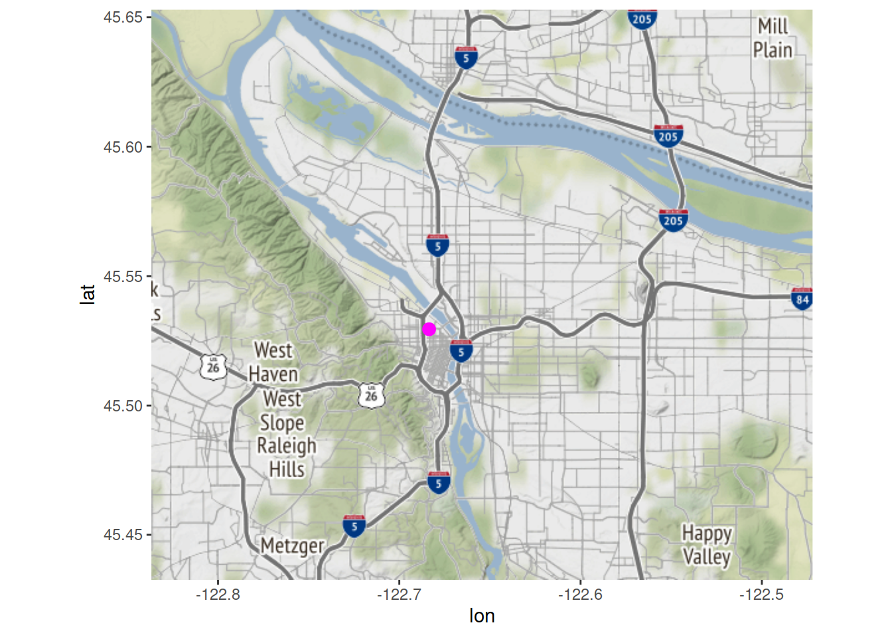
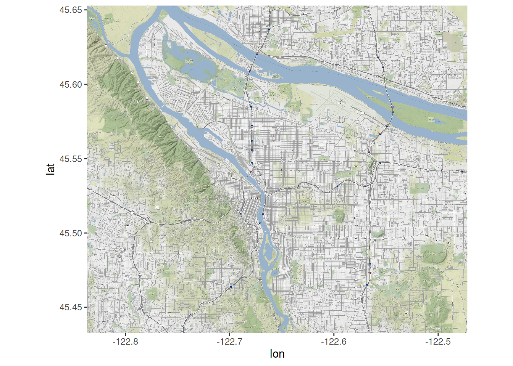

My goal is a streamlined and self-contained freeware map maker with points denoting addresses. It is a three step process that involves:
From there, it is pretty easy to get fancy using ggplotly to put relevant text hovers into place.
There are a few map sources that R can access. Google has now made most features pay to access with generous free allocations. It is worth it to sign up if one plans to use it frequently. I have never actually paid for use but I do not use it much. There are nice instructions in a post by littlemissdata. The other issue is the type of map. The coordinates are crucial and I will need a map that is bounded on latitude and longitude. For that purpose, I think I will use ggmap. The register_google line invokes my Google API key.
library(tidyverse)
library(ggmap)
library(osmdata)
pdx_map <- get_map(getbb("portland oregon"), maptype = "roadmap")
ggmap(pdx_map)First, to get the data. I will create some data using the Portland Center but it could easily be replaced with imported data.
Portland.Center <- data.frame(address = c("905 NW 12th Ave, Portland, OR 97209"), stringsAsFactors = FALSE)
Portland.Center <- Portland.Center %>% mutate_geocode(., address)
Portland.Center## address lon lat
## 1 905 NW 12th Ave, Portland, OR 97209 -122.6836 45.5295Because they are same source geocodings, this works directly.
ggmap(pdx_map) + geom_point(data=Portland.Center, aes(x=lon, y=lat), size=3, color="magenta")
First, an open source map.
pdx.map <- get_stamenmap(getbb("portland oregon"),
zoom = 14)
ggmap(pdx.map)
library(tmaptools)
Geocoded.PDX <- geocode_OSM(Portland.Center$address, as.data.frame = TRUE) %>% select(query, lat, lon)
p1 <- ggmap(pdx.map) + geom_point(data=Geocoded.PDX, aes(x=lon, y=lat, text=query), size=3, color="magenta")
library(plotly)
p1a <- ggplotly(p1)
htmlwidgets::saveWidget(
widgetframe::frameableWidget(p1a), here:::here('static/img/widgets/smp1map.html'))A very cool toy is leaflet. The markers work the way as geom_point but hovers can be replaced with popups of various forms. I really like this.
library(leaflet)
Geocoded.PDX## query lat lon
## 1 905 NW 12th Ave, Portland, OR 97209 45.52957 -122.6836m <- leaflet() %>% addTiles() %>% addMarkers(., data=Geocoded.PDX, lng=~lon, lat=~lat, popup = ~query)
htmlwidgets::saveWidget(
widgetframe::frameableWidget(m), here:::here('static/img/widgets/mmmap.html'))